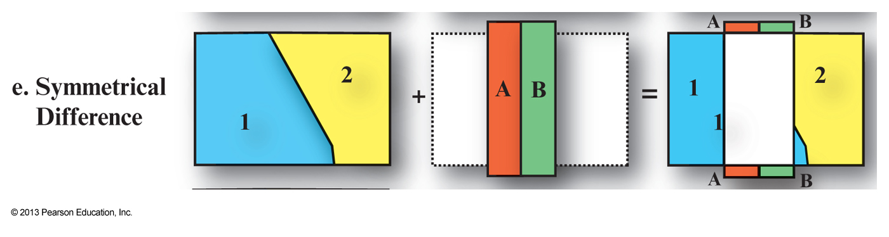

Press 'o' to toggle the slide overview and 'f' for full-screen mode.
Choose the theme in which to view this presentation:
Black -
White -
League -
Sky -
Beige -
Simple
Serif -
Blood -
Night -
Moon -
Solarized
Copyright © John Lindsay, 2015
Mid-term Exam
- Next Wed. (Oct. 28)
- Will be short-answer type questions.
- Includes all lecture and reading materials
- Introduction to GIS
- Geospatial data
- Data quality
- Basic vector analysis (not raster)
GEOG*3480
GIS and Spatial Analysis
Basic Raster and Vector
Data Analysis Part 1
John Lindsay
Fall 2015
Readings
- Jensen and Jensen Chapter 6
Lecture Outline
- Introduction
- Vector data analysis
- Buffering
- Overlay operations
- Raster data analysis
- Distance operations
- Local raster operations
- Neighbourhood operations
- Zonal operations
Introduction
- We carry out analysis on geospatial data to uncover important spatial relations, gain understanding about some phenomena or system, and perhaps to inform some decision.
- We commonly classify spatial analysis ops as 'Vector' or 'Raster' but 1) often the same analysis can be perform using either model (e.g. buffering), and 2) many types of analysis involve both raster and vector data.
- 'Basic' raster and vector analysis includes a class of ops that are fundamental to a wide range of applications and are common in practice.
Vector buffering
- Buffering is the creation of a zone of interest around a spatial entity or set of entities
- Implies the calculation of distance
- We are usually interested in the
Euclidean (straight line) distance - Distance between points i and j can be calculated as:
\(d=\sqrt{(X_i - X_j)^2 + (Y_i - Y_j)^2}\)
Vector buffering
Buffering and dissove
Vector buffering
Vector buffering

Variable buffering distances
Vector buffering
Vector map overlay
- GIS is based on the concept that you are able to combine one or more geographic layers
Map overlay is the technique, or collection of techniques, for combining spatial layers- Can be used purely for visualization purposes or to answer questions and derive new information, i.e. new spatial layers
- Combining two maps using an overlay technique always
results in a more complex map , i.e. More polygons, arcs and nodes than either of the two original images - This can be a problem for visualization
Vector map overlay

Vector map overlay
Vector map overlay
This is a bad example of identity because the identify layer is completely
contained in the input layer.